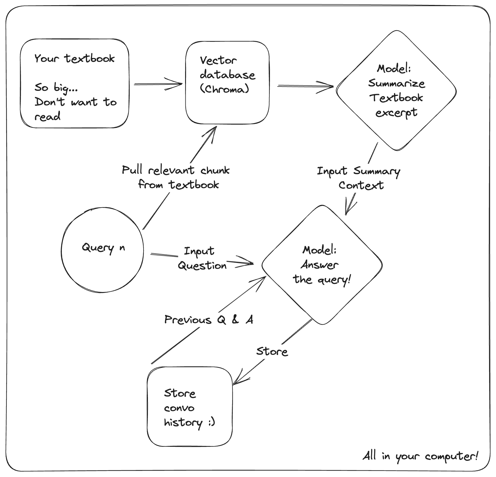
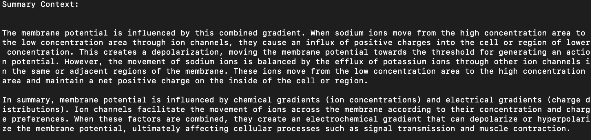
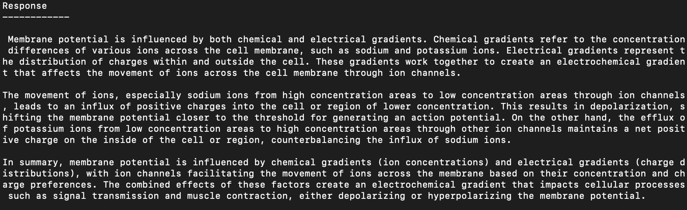

Utilizing Context to use LLMs for Learning
Graphical Overview
Summary of the Text
Here we use the LLM to summarize the context pulled from the vector database 
The Response
 Both are provided to the user to read and evaluate!
Demonstration, Biology Text - How has the Hox gene complex evolved over time?
Context - Rated 9/10 by GPT 4! (is arbitrary... sorry)
The Hox gene complex has evolved over time through a process of gene duplication and diversification. It is believed to have originated early in animal evolution, around 600 million years ago, with the common ancestor of diverse animal groups. As different animal lineages diverged and evolved, the number of Hox genes increased, allowing for the development of larger, more complex body structures. The earliest known animals in the fossil record had few or no Hox genes, while later-appearing groups had an increased number of Hox genes. This process has contributed to shaping animal development and diversity across various phyla. The specific number of Hox genes varies among species, such as with primates like humans having 39 pairs, which is one less than chimpanzees and three fewer than gorillas.
No Context - Rated 7.5/10 by GPT 4! (is arbitrary... sorry)
The evolution of the Hox gene complex is a fascinating area of study in molecular biology and genetics. Hox genes are a group of genes that play a crucial role in determining the development and organization of an organism's body plan during embryonic development. They do this by controlling the expression of other genes, leading to specific patterns of cell differentiation and tissue formation. As for how these Hox genes have evolved over time, it is believed that they have arisen through a process of gene duplication, followed by divergence and specialization. This means that early in the history of life on Earth, a single Hox gene or a small group of related Hox genes emerged. These initial Hox genes likely controlled the development of simple body plans found in early organisms. Over millions of years, these genes duplicated, creating additional copies with slight variations. As these copies accumulated, some of them gained new functions or were specialized for specific roles in different organisms. This diversification allowed the evolution of more complex body plans and morphologies in various species.